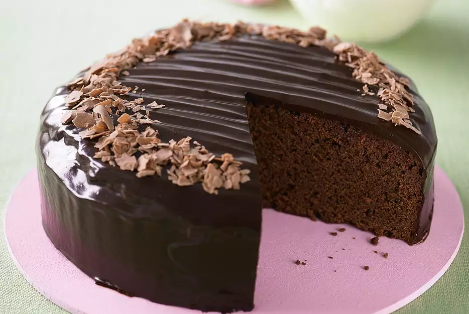

Chocolate Cheese Cake

Description
Chocolate cheese cake - is a perfect desert for you and your family.
The delicate struckture of a cheese cake combined with the chocolate flavor and crunchy crust will make your evening unforgettable.
Ingredients
- 1 cup white sugar
- 1/3 cup butter
- 1 cup yogurt
- 1 & 1/2 cups all-purpose flour
- 3 eggs
- 1/4 teaspoon vanilla extract
- 2 teaspoons baking powder
- 12 (1.5 ounce) bars milk chocolate candy
- 2 cups cream cheese
- 3 eggs
- 1/4 teaspoon vanilla extract
- 3/4 cup white sugar
- 1/4 cup confectioners' sugar for dusting
Step by step, how to make:
- Preheat the oven to 350 degrees F (175 degrees C). Oil and flour a 9 inch round pan.
- In a large bowl, cream the butter or margarine and 1 cup sugar. Beat in 3 eggs. Blend in yogurt. Combine the flour and baking powder; add to the creamed mixture. Stir in 1/4 teaspoon vanilla. Melt 6 chocolate bars; blend into the batter. Pour batter into prepared pan.
- Bake for 30 minutes, or until the cake tests done. Allow to cool for 10 minutes in the pan.
- Cut a hole in the center of the cake that does not go all the way through the cake. Melt another 6 sweet chocolate bars, and pour into the hole.
- Beat cream cheese, 3 eggs, 1/4 teaspoon vanilla, and 3/4 cup sugar together until smooth. Pour over the cake. Bake for 20 minutes.
- Sprinkle confectioners' sugar on the top of the cake. Return to oven. Bake until the sugar melts and browns. Serve.
Go back